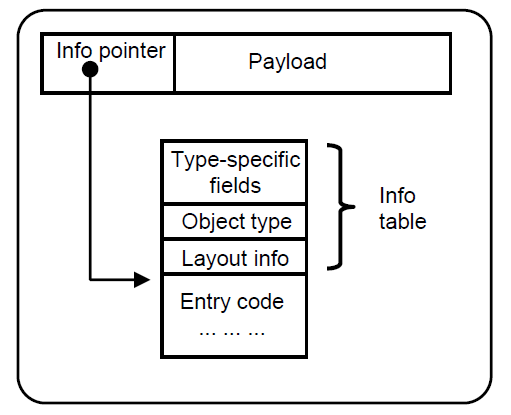

The Spineless Tagless G-Machine
How GHC Handles Partial Application
2019-07-20
Armin Bernstetter
Haskell
- Search for a “common functional language”
- 1987-1989 commitee meetings
- 1989 start of development, 1990 Haskell version 1.0
- Named after mathematician Haskell Curry
A history of Haskell: being lazy with class (Hudak et al. 2007)
GHC
- Glasgow Haskell Compiler
- Written in Haskell
- Lead Developers:
- Simon Peyton Jones (Microsoft Research)
- Simon Marlow (Facebook)
- De facto default Haskell compiler
- https://gitlab.haskell.org/ghc/ghc/wikis/index
GHC Compilation Flow
+---------+
LLVM backend /-->| LLVM IR |-\
| +---------+ | LLVM
| v
+------------+ Desugar +------+ STGify +-----+ CodeGen +-----+ | NCG +----------+
| Parse tree |--------->| Core |-------->| STG |--------->| C-- |----+-------->| Assembly |
+------------+ +------+ +-----+ +-----+ | +----------+
| ^
| +---+ | GCC
C backend \---->| C |--/
+---+https://gitlab.haskell.org/ghc/ghc/wikis/commentary/compiler/generated-code
The Spineless Tagless G-Machine
Compiled graph reduction machine for a lazy functional language
- Jones (1992):
- Implementing lazy functional languages on stock hardware: the Spineless Tagless G-machine
- Marlow and Jones (2004):
- Making a fast curry: push/enter vs. eval/apply for higher-order languages
- Marlow, Yakushev, and Peyton Jones (2007):
- Faster Laziness Using Dynamic Pointer Tagging
Other examples/Predecessors
- G-machine (Johnsson 1984)
- TIM: Three Instruction Machine (Fairbairn and Wray 1987)
Spineless
- STG program is a graph, not a tree
- Graph not represented as single data structure in memory
- Small, individual parts of the graph that reference each other
Tagless

- Tagless
- Refers to how a heap closure is evaluated
f x y = case x of (a,b) -> a+y- Before taking x apart: STGM pushes code to stack and jumps to entry code for x
- TagFUL
- Closure to evaluate is only entered if its tag says it is unevaluated
Update 2007
Faster Laziness Using Dynamic Pointer Tagging (Marlow, Yakushev, and Peyton Jones 2007)
- Tagless scheme more expensive (additional indirect jumps)
- Dynamic pointer tagging: using spare low bits of a pointer to encode information about pointed-to closure
Heap object structure
Here: every heap object has associated entry code. Therefore term “closure” is used for any heap object
- Closure
- Block of static code together with values of its free variables. Physical representation of such a closure is a pointer to a contiguous block of heap-allocated storage
- Thunk
- Suspended computation. In a non-strict language, values are passed in unevaluated form, and only evaluated when their value is actually required. These unevaluated forms capture a suspended computation and can be represented by a closure in the same way as a function value. When a thunk is forced for the first time, it is physically updated with its value
(Jones 1992)
Saturated Calls
(f 3 4)is a call to a known function (saturated call)- Compiler simply loads arguments and calls code for
fdirectly - What happens with “unknown” functions?
Example
zipWith :: (a -> b -> c) -> [a] -> [b] -> [c]
zipWith k [] [] = []
zipWith k (x:xs) (y:ys) = k x y : zipWith k xs ys- k is an unknown function
- Might take one argument, compute for a while and return function that consumes next argument
- Might take three arguments, so that result of
zipWithis list of functions
Push/Enter vs Eval/Apply
- Push/Enter
- The function which statically knows its own arity examines the stack to figure out how many arguments it has been passed and where they are.
- Eval/Apply
- The caller which statically knows what the arguments are examines the function closure, extracts its arity and makes an exact call to the function.
(Marlow and Jones 2004)
The STG Language (Syntax)
Expressions
Example: map
Ministg
- https://github.com/bjpop/ministg
- STG interpreter written in Haskell
- Provides insight in STG language evaluation
- Optional tracing of program execution
“Alternative” to ministg
- stgi
- https://github.com/quchen/stgi
- Also STG interpreter but based on (Jones 1992)
Example
Program: apply.stg
Eval/Apply Trace
- Expression
- Code that is under evaluation
- Stack
- Stack of continuations. What to do when current expression is evaluated
- Heap
- Finite mapping from variables to heap objects
Step 0
| Stack | Expression |
main |
Heap
| Variable | Object |
apply |
FUN(f x -> f_? x) |
const |
FUN(x y -> x) |
main |
THUNK(apply_2 const true twentytwo) |
true |
CON(True) |
twentytwo |
CON(I 22) |
Step 1: THUNK (most recent rule applied)
| Stack | Expression |
upd * main |
apply_2 const true twentytwo |
Heap
| Variable | Object |
apply |
FUN(f x -> f_? x) |
const |
FUN(x y -> x) |
main |
BLACKHOLE |
true |
CON(True) |
twentytwo |
CON(I 22) |
Step 2: CALLK
| Stack | Expression |
(* twentytwo) |
const_? true |
upd * main |
Heap
| Variable | Object |
const |
FUN(x y -> x) |
main |
BLACKHOLE |
true |
CON(True) |
twentytwo |
CON(I 22) |
Step 3: PAP2
| Stack | Expression |
(* twentytwo) |
$0 |
upd * main |
Heap
| Variable | Object |
$0 |
PAP(const true) |
const |
FUN(x y -> x) |
main |
BLACKHOLE |
true |
CON(True) |
twentytwo |
CON(I 22) |
Step 4: RETFUN
| Stack | Expression |
upd * main |
0_? twentytwo |
Heap
| Variable | Object |
$0 |
PAP(const true) |
const |
FUN(x y -> x) |
main |
BLACKHOLE |
true |
CON(True) |
twentytwo |
CON(I 22) |
Step 5: PCALL
| Stack | Expression |
upd * main |
const_? true twentytwo |
Heap
| Variable | Object |
const |
FUN(x y -> x) |
main |
BLACKHOLE |
true |
CON(True) |
twentytwo |
CON(I 22) |
Step 6: EXACT
| Stack | Expression |
upd * main |
true |
Heap
| Variable | Object |
main |
BLACKHOLE |
true |
CON(True) |
Step 7: UPDATE
| Stack | Expression |
true |
Heap
| Variable | Object |
true |
CON(True) |
The computation has completed
Push/Enter Trace
Comparison
Pro Eval/Apply
- When calling unknown function with right number of arguments, arguments can be passed in registers rather than on stack. For registerrich architecture strongest reason for e/a. p/e forces arguments to unknown functions to be passed on the stack
- Easier to map to portable assembly language such as C or C - -
- No need to distinguish return addresses from heap pointers. (“This is a big win” (Marlow and Jones 2004))
- No tagging for non-pointers
Pro Push/Enter
- Appears to be natural fit with currying
- Eliminates some PAP allocations compared to e/a
- payload of PAP object can be self-describing because arguments are tagged. In contrast, an e/a PAP object relies on its FUN to describe the layout of he payload. this results in some extra complication in the garbage collector and an extra global invariant: a PAP must contain a FUN. cannot contain another PAP
Conclusion
- It is impossible to a rational conclusion about performance based on just the differences between the models
- Push/Enter seems to be natural fit with currying
- Eval/Apply seems to have decisive advantages in terms of complexity
- Easier to map code to portable assembly language with E/A
- Bottom Line: If Eval/Apply is no more expensive than push/enter it is definitely to be preferred
- Performance measuring shows: Eval/Apply is better
(Marlow and Jones 2004)
Fairbairn, Jon, and Stuart Wray. 1987. “TIM: A Simple, Lazy Abstract Machine to Execute Supercombinators.” In Conference on Functional Programming Languages and Computer Architecture, 34–45. Springer.
Hudak, Paul, John Hughes, Simon Peyton Jones, and Philip Wadler. 2007. “A History of Haskell: Being Lazy with Class.” In Proceedings of the Third ACM SIGPLAN Conference on History of Programming Languages, 12–11. ACM.
Johnsson, Thomas. 1984. Efficient Compilation of Lazy Evaluation. Vol. 19. 6. ACM.
Jones, Simon L Peyton. 1992. “Implementing Lazy Functional Languages on Stock Hardware: The Spineless Tagless g-Machine.” Journal of Functional Programming 2 (2). Cambridge University Press: 127–202.
Marlow, Simon, and Simon Peyton Jones. 2004. “Making a Fast Curry: Push/Enter Vs. Eval/Apply for Higher-Order Languages.” In ACM SIGPLAN Notices, 39:4–15. 9. ACM.
Marlow, Simon, Alexey Rodriguez Yakushev, and Simon Peyton Jones. 2007. “Faster Laziness Using Dynamic Pointer Tagging.” In Acm Sigplan Notices, 42:277–88. 9. ACM.